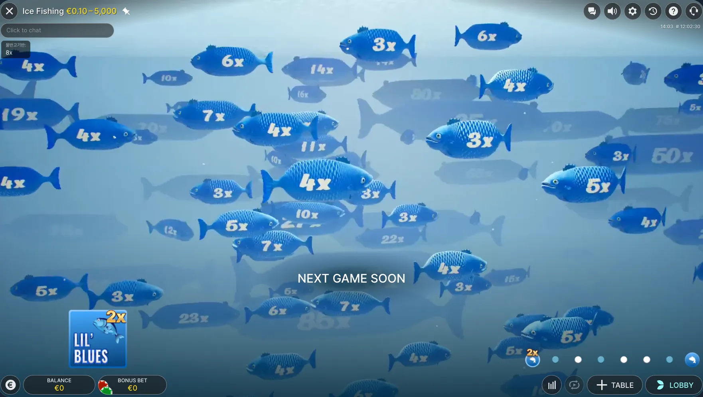
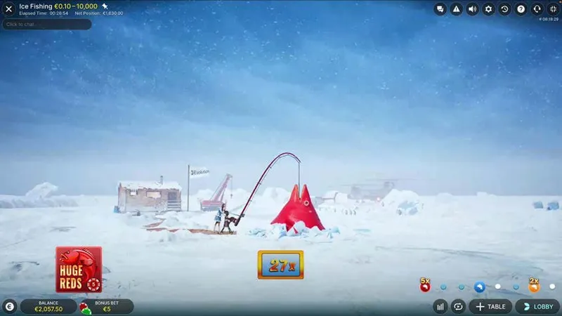
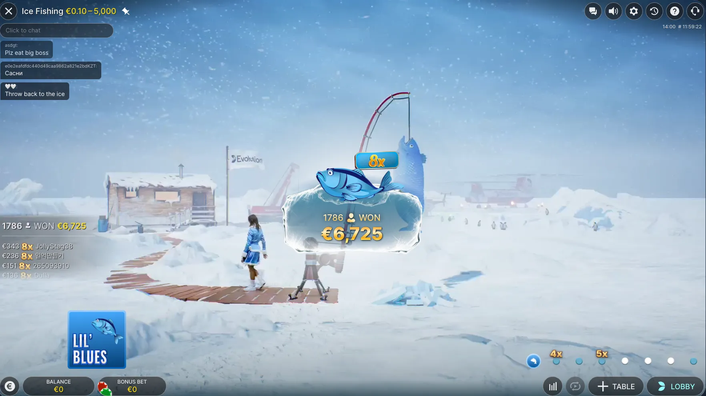

Is there a free Ice Fishing demo?
Not a play-money one. Ice Fishing is a live game show, so there is no free demo with virtual credits like slots have. You can see how it plays in the walkthrough above and play at a licensed operator.
Ice Fishing
Ice Fishing is Evolution's live game show, so there is no free play-money demo. See exactly how a round plays, step by step, before you play for real.
18+ only · Real-money gambling
If you are looking for an Ice Fishing demo, here is the honest answer. Because Ice Fishing is a live casino game show from Evolution, with a real host streamed in real time, there is no free play-money demo the way many slots and instant games have. What you can do is follow a full round below, step by step, to see how the wheel and bonus rounds work before you play for real.
Here is a full round, step by step. You place bets on the 53-segment money wheel: the Leaf segments or the fish segments (Lil' Blues, Big Oranges and Huge Reds). The wheel is spun and random multipliers of up to 10x are added. If it stops on a fish, a bonus catch mini-game reels in a random multiplier, and the round ends with your payout, up to 5000x.




Ice Fishing runs as a live game show on a real operator session, so there is no standalone play-money version to load for free. Sites that advertise a free Ice Fishing demo usually just redirect you to a casino. The honest way to preview it is to follow the round above.
As you follow the round above, notice the pace, how often the wheel lands on a fish, and how the random multipliers can boost a win. Ice Fishing is a game of chance with no pattern to predict, so treat it as entertainment and set a budget before you play. When you are ready, our Ice Fishing casino page shows where to play for real money.
Not a play-money one. Ice Fishing is a live game show, so there is no free demo with virtual credits like slots have. You can see how it plays in the walkthrough above and play at a licensed operator.
Because it is streamed live with a real host and runs on a real operator session, so a standalone play-money demo is not offered.
Most just redirect you to a casino. Be cautious with any site that promises a free playable demo of a live game show.
Follow the step-by-step round above to see the wheel, bonus rounds and multipliers, then start small at a licensed casino when you are ready.
See our Ice Fishing casino page for a comparison of licensed operators that offer the game.
See where to play Ice Fishing live
18+ only. Gambling involves financial risk and is not a way to make money. Play responsibly and never bet more than you can afford to lose. If gambling stops being fun, seek help: GamCare (gamcare.org.uk), BeGambleAware (begambleaware.org), or the 1-800-GAMBLER helpline.
Affiliate disclosure: some links on this page are affiliate links. If you sign up through them we may earn a commission at no extra cost to you. This never affects our assessments. Commercial availability and terms are set by the operators.